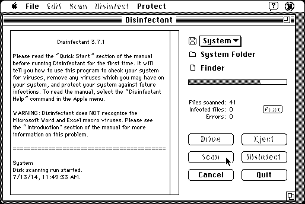

Download
disinfectant371.zip (160K) Disinfectant 3.7.1 repackaged into a zipped hfs disk image and checksum file. The disk image can be mounted with Mini vMac.
disinfectant371.sea.hqx (246K) Disinfectant 3.7.1 in the original format.
copyright: Northwestern University
mod date: July 9, 1998
license: free for non-commercial use
last known url
(gone)
Detects and removes some Macintosh viruses. By John Norstad. The author strongly discourages using it, saying an antivirus program that isn't updated gives a false sense of security. But anyway, at least of historical interest.

If you find these downloads useful, please consider helping the Gryphel Project, which hosts them.
Here are the md5 checksums for the downloads, signed with Gryphel Key 5:
--------- GRY SIGNED TEXT --------- d1f7c1eaabd1c52e5d1467d9d651dd8a disinfectant371.sea.hqx 4f6212be036f62a8a3b77908ab49ccfc disinfectant371.zip ------- BEGIN GRY SIGNATURE ------- Gry/4Xa8CFcUzxdN/Bo8T2oZirtq5gtjQKJCs+kElAO/yIfMQ9ybL2sb9t+rTdC+ JYYgWY2uFOblgY8euFafu1Zg5Az69Vsl3YKJn9wrUVGCeGxbKQIDNXbNK9Lh/jPn 2bn+rfXWfMhNjT3s7yUMKbl+EEh8aEqJySL1XNKBZ0OkzgRgT0VgyIVTn4R9ZVJ4 -------- END GRY SIGNATURE --------